非推奨モジュール（旧モジュール）から代替モジュールへ、設定値（module / config テーブル）だけを移行する管理画面プラグインです。
テンプレートファイルの書き換えは対象外で、旧モジュール名がテンプレート上に残っている箇所はエディタの全文検索等で別途確認する運用を前提としています。
| 非推奨モジュール | 代替モジュール | 難易度 | 移行方式 |
|---|---|---|---|
Plugin_Schedule |
Schedule |
A: 自動移行可能 | configキー・デフォルト値まで完全一致するため、モジュール名のリネームのみ（設定値の変換は発生しない） |
Entry_Headline / Entry_List / Entry_Photo |
Entry_Summary |
B: 要レビュー | 旧モジュールごとに異なる設定キーを Entry_Summary の対応キーへ変換して書き込み |
Category_EntryList |
Category_EntrySummary |
B: 要レビュー | 設定キーを変換。テンプレート変数体系の相違（entryUrl/entryTitle 等 → url/title 等、unit:loop でのラップが必要）を注意事項として表示 |
Banner |
Media_Banner |
C: 要手動対応（一部オプトイン） | バナー画像をメディアライブラリへ移設。実ファイルが存在しないスロットは自動的に除外し、警告として表示 |
User_Profile |
User_Search |
C: 要手動対応（自動移行なし） | 自動移行を提供しない。差分プレビューは「自動移行できない理由」チェックリストのみを表示し、適用ボタンは無効化 |
管理画面サイドバーの「拡張アプリ」→「DeprecatedModuleMigration」から、ブログ単位で以下の流れで進める。
module テーブルを走査し、対象の非推奨モジュールを一覧表示（モジュールID・現在のモジュール名・移行先・難易度バッジ）module / config 行をスナップショットとして保存した上で書き換えAcms\Plugins\DeprecatedModuleMigration\（src/ が実体）MigrationStrategyInterface を実装した5戦略クラス（Strategy/）ModuleMigrationManager が検出・差分計算・適用・ロールバックを統括Snapshot/ が適用前状態の保存・復元を担当（プラグイン独自テーブル）POST/ModuleMigration{Detect,Diff,Apply,Rollback}.phpassets/src/ を tsdown で単一バンドル src/dist/admin.js にビルド@ablogcms/*（React / react-utils / dialog / fetch-client 等の公開npmパッケージ）をプラグイン自身に独立バンドル<script type="module"> で直接読み込ませる方式（コア本体のバンドルとは別インスタンス）
Docker Compose（appleple/acms:3.2-php8.5 + MySQL 8.4）で a-blog cms を新規インストールし、
プラグインをインストール・有効化した上で、想定している7種の旧モジュール全てについて実際の管理画面操作で検証した。
7種類の旧モジュールをDBに直接投入（PDO経由でPHPスクリプトを実行）した状態で一覧画面を開き、全件が正しいランクバッジ付きで検出されることを確認した。
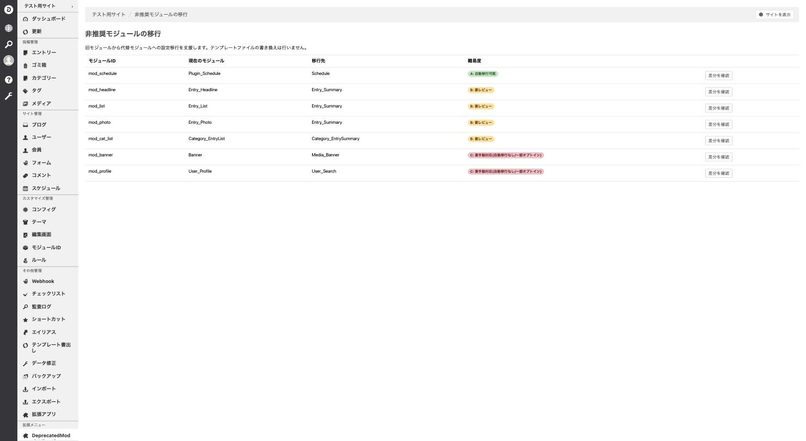
configキー schedule_unit を投入した状態で差分を確認したところ、差分テーブルは空で表示された。
これは意図された挙動であることをコード調査で確認済み（ScheduleMigrationStrategy は Plugin_Schedule と Schedule のconfigキー・デフォルト値が完全一致するとの設計判断に基づき、常に空のitems配列を返す。単体テスト・統合テストでも明示的に検証されている）。
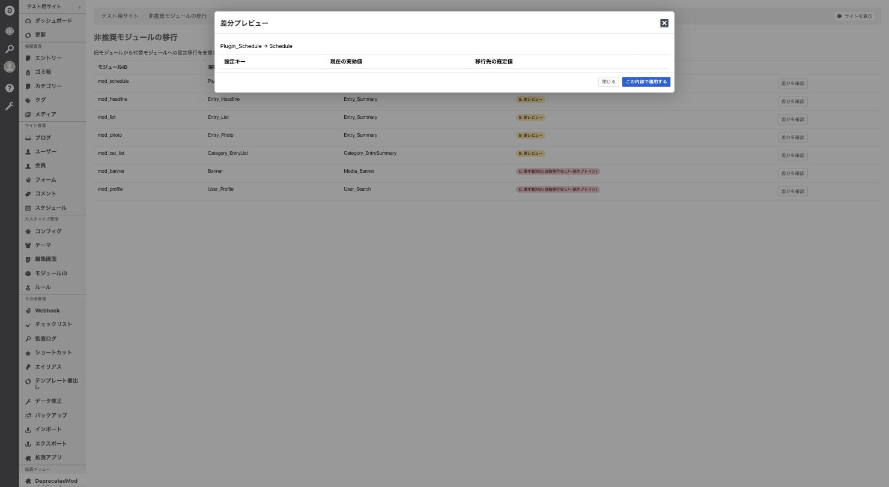
基本スコープ（entry_headline_limit=5）に加え、URLパターン別設定（ルールID 42）で entry_headline_limit=20 という上書きを投入し、ルール単位の移行を検証した。
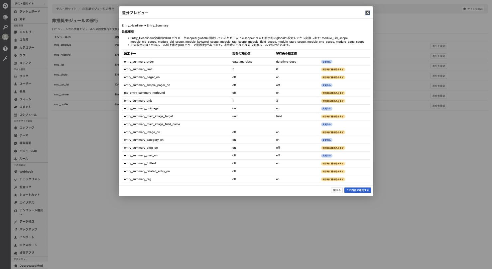
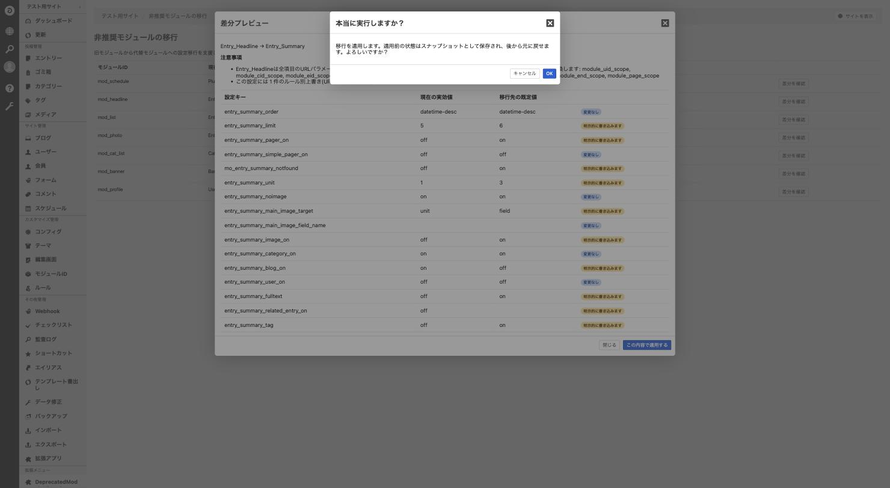
window.confirmではなく、プラグインが独自にマウントした<DialogContainer/>によるアプリ内モーダルが表示されている。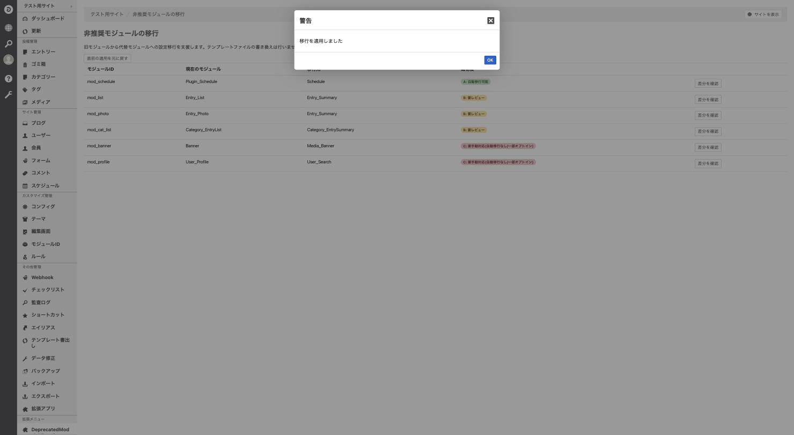
acms_config を直接クエリして検証した。
config_module_id config_key config_value config_rule_id 2 entry_summary_limit 5 NULL ← 基本スコープ 2 entry_summary_limit 20 42 ← ルール別上書き(rule_id=42)基本スコープとルール別上書きが、それぞれ独立した行として正しく
entry_summary_limit にリネームされ、値も個別に維持されていることを確認した。
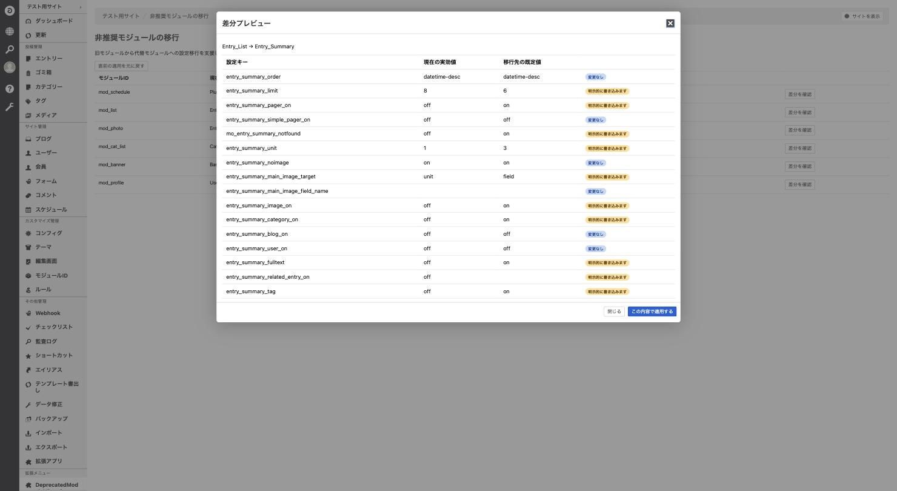
entry_summary_limit が旧値8で明示的に書き込まれる。適用も正常に完了。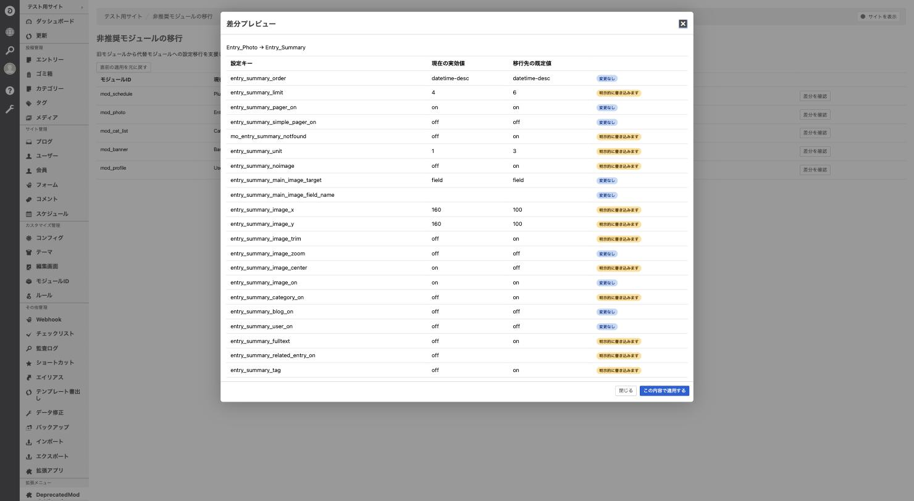
entry_summary_image_x/y 等）への変換を含め正しく表示。適用も正常に完了。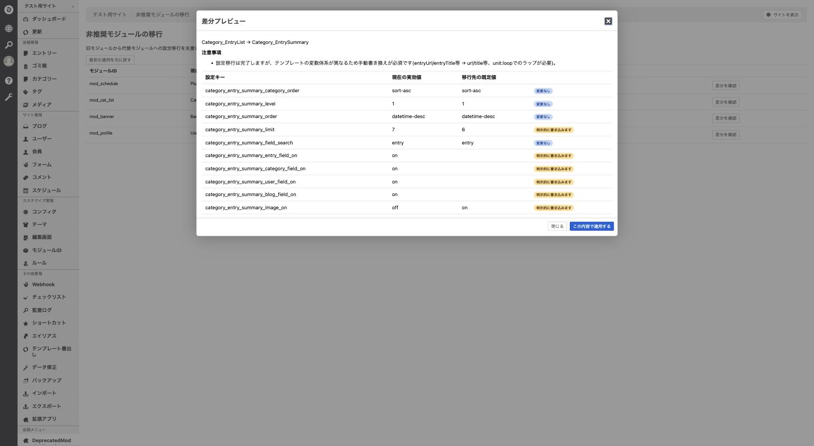
実ファイルの存在しない画像パスをconfigに投入し、除外ロジックを検証した。
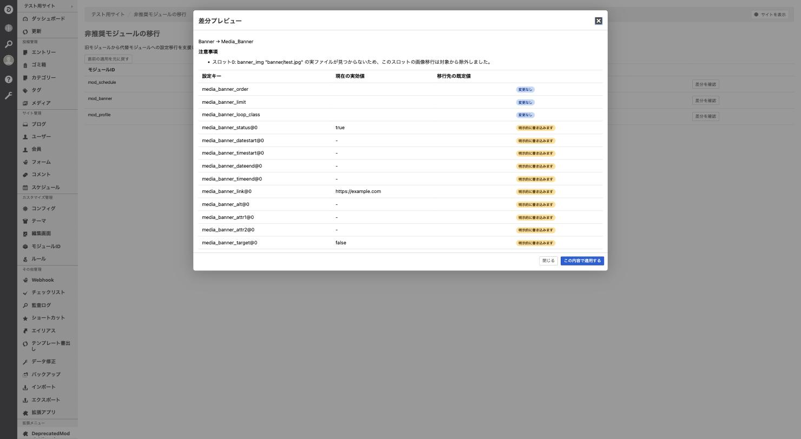
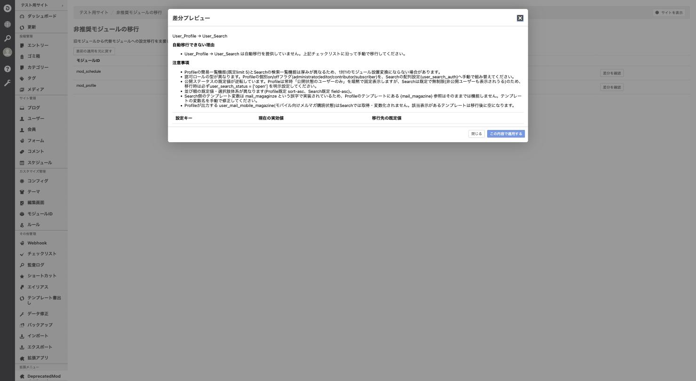
disabled 属性で無効化されていることをDOM検査でも確認した。Banner適用後に「直前の適用を元に戻す」を実行し、スナップショットからの復元を検証した。
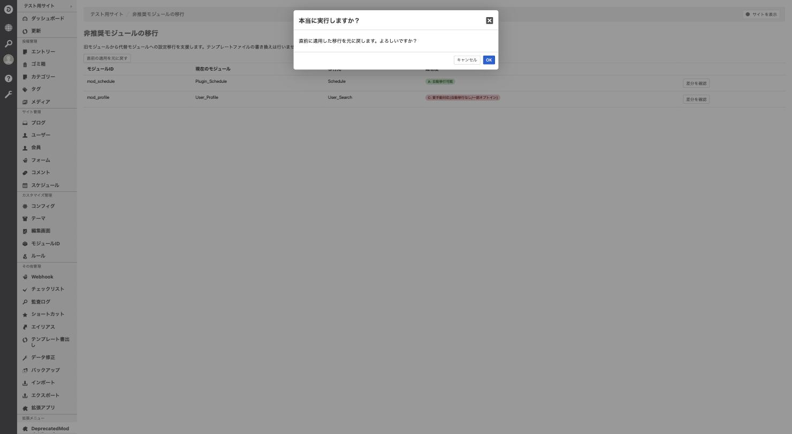
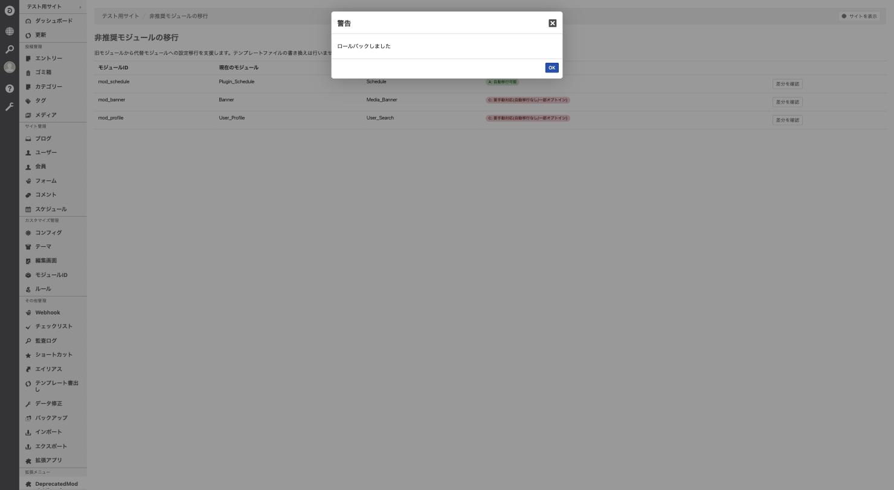
以下の2件は tsc・PHPStan・Vitest（モック使用）では検出できず、実際のブラウザで操作して初めて発覚した不具合。いずれも修正済みで、再発防止のテスト・チェックを追加した上でリポジトリにpush済み（CI green）。
react-dom/client / react/jsx-runtime が未バンドルでブラウザが壊れる<acms-module-migration-admin>）が何も描画されず、コンソールに
TypeError: Failed to resolve module specifier "react-dom/client" というエラーが出ていた。
deps.alwaysBundle に文字列の完全一致（'react-dom'）を指定していたため、サブパスimport（react-dom/client）が外部化されたまま残っていた。Node.js のモジュール解決では裸のimportでも解決できてしまうため、tsc・Vitest では問題が表面化しなかった。
alwaysBundle を正規表現（/^react-dom$/, /^react-dom\// 等）に変更し、サブパスも確実にバンドルに含めるようにした。
再発防止として、ビルド出力（src/dist/admin.js）内に裸のimportが残っていないかを機械的に検査する scripts/check-bundle.mjs を追加し、npm run build 後に自動実行される postbuild フックとして組み込んだ。
dialog.confirm()）が永久に未解決のまま止まる@ablogcms/dialog はモジュール内シングルトンのstoreを介して dialog.confirm() と <DialogContainer/> を連携させる設計。a-blog cms本体の管理画面バンドルは自前で <DialogContainer/> を1つグローバルにマウントしているが、それは本体がバンドルした @ablogcms/dialog のインスタンス限定のstoreを購読している。本プラグインはtsdownで @ablogcms/* を自身のバンドルへ独立してバンドルしているため、本体とは別インスタンス（別store）になり、本体側の <DialogContainer/> には届かなかった。
<DialogContainer/> を追加し、バンドルされた自分自身の dialog インスタンスに対して解決させるようにした。
再発防止として、モックせず実物の @ablogcms/dialog を使う結線テスト（mount-module-migration-admin.test.tsx）を追加した。
| 種別 | 結果 |
|---|---|
| フロントエンド（Vitest） | ✓ 6ファイル / 46件 全て成功（本レポート作成時点で再実行済み） |
| バックエンド（PHPUnit: Unit / Integration） | 35個のテストファイルが存在。Docker上の実DBと接続したCI（GitHub Actions）で継続的に検証 |
GitHub Actions（Test workflow） | ✓ 最新コミット（2つの不具合修正含む）で成功（成功、約1分38秒） |
.html 等）の書き換えは対象外。旧モジュール名・旧変数名がテンプレートに残っている箇所は、エディタの全文検索等で別途手動確認・修正する運用が前提。Category_EntryList → Category_EntrySummary と Entry_* → Entry_Summary は設定移行は完了するが、テンプレート側の変数体系が異なるため手動でのテンプレート修正が必須（差分プレビュー画面に注意事項として明示）。User_Profile → User_Search は自動移行を提供しない（権限モデル・公開ステータスの既定値・テンプレート変数がいずれも大きく異なるため）。差分確認画面は「自動移行できない理由」チェックリストの提示のみに留まる。